01
Savdo markazi
Торговый центр
Shopping Mall
Savdo markazida avtomatik parking Автоматический паркинг в торговом центре Automated Parking for Shopping Mall
VazifaЗадачаObjective
Kirish va chiqishda transport oqimini tezlashtirish hamda parkingni to'liq nazorat qilish.
Ускорить транспортный поток на въезде и выезде, обеспечить полный контроль паркинга.
Accelerate traffic flow at entry and exit points and ensure complete parking control.
YechimРешениеSolution
ANPR kameralar, tezyurar shlagbaumlar, to'lov tizimi va bo'sh joylar monitoringi yagona tizimga birlashtirildi.
ANPR-камеры, скоростные шлагбаумы, платёжная система и мониторинг свободных мест объединены в единую систему.
ANPR cameras, high-speed barriers, payment system and free-space display integrated into a single platform.
IntegratsiyaИнтеграцияIntegration
Onlayn to'lov tizimlari (Payme/Click) va operatorning markaziy boshqaruv paneli.
С платёжными сервисами (Payme/Click) и единой панелью оператора паркинга.
With online payment gateways (Payme/Click) and central operator dashboard.
NatijaРезультатOutcome
Mijozlar uchun to'xtovsiz kirish-chiqish, navbatlar 70% ga qisqarishi va tushumlar 100% shaffofligi.
Беспрепятственный проезд клиентов, сокращение очередей на 70% и 100% прозрачность выручки.
Non-stop access for visitors, 70% queue reduction, and 100% revenue transparency.
JihozlarОборудованиеEquipment
ANPR kameralar, tezyurar shlagbaumlar, to'lov terminali, LED info-tablo.
ANPR-камеры, скоростные шлагбаумы, платёжный терминал, LED-табло.
ANPR cameras, high-speed barriers, payment kiosk, LED display.
Parking
-70% navbatочередейqueues
* Loyiha yakunidagi ichki hisob-kitob asosida* По внутренним расчётам на момент сдачи проекта* Based on internal project-completion assessment